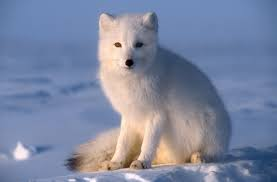

ARCTIC FOX FACTS

Physical Traits
Small body, thick fur
White coat in winter
Bushy tail for warmth
Habitat
Arctic regions
Tundra and icy areas
Lives in burrows

Diet
Eats rodents and birds
Scavenges leftovers
Stores food for winter
Cold-adapted fox from the Arctic with seasonal fur

Small body, thick fur
White coat in winter
Bushy tail for warmth
Arctic regions
Tundra and icy areas
Lives in burrows
Eats rodents and birds
Scavenges leftovers
Stores food for winter
Fur changes color with seasons for camouflage.
Can survive temperatures below -50°C (-58°F).